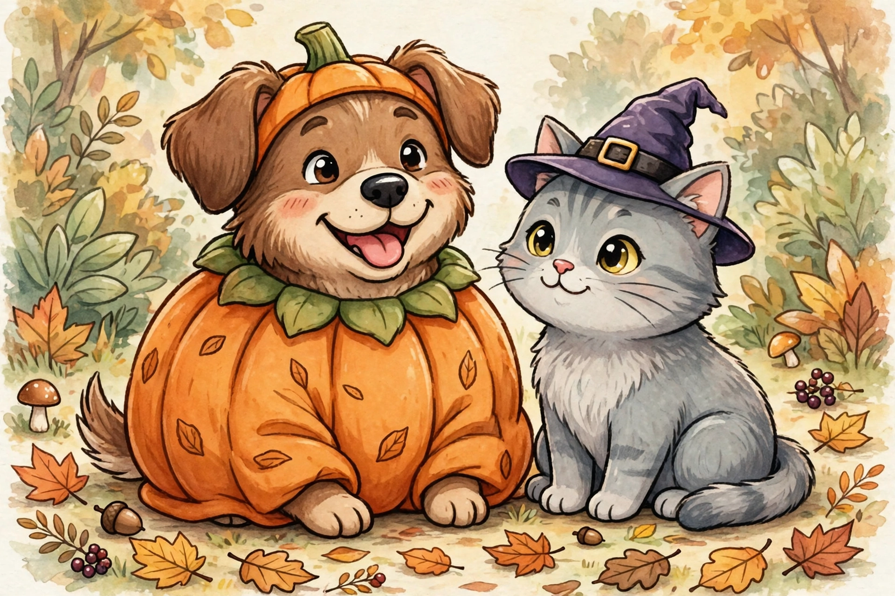

Pet costumes: fun ideas and the safety ground rules
A dog in a hot-dog costume is objectively one of the funniest sights on earth. Pet costumes are a Halloween highlight — but they come with a responsibility the human costumes don't: your pet can't tell you when something's wrong. So here's the deal: adorable ideas first, then the safety ground rules that are non-negotiable.
Costume ideas that actually work for pets
The best pet costumes are simple, lightweight, and don't cover the face. Dogs tend to tolerate more; cats tend to tolerate less. Work with your animal, not against them.
For dogs: a pumpkin or hot-dog body suit (the classics for a reason), a lion's mane ruff around the head, a superhero cape that attaches at the collar, or a "business dog" with a tiny tie clipped to the collar. Bandana-based costumes — a pirate bandana, a ghost-face print — are the lowest-friction option and most dogs don't mind them at all.
For cats: keep it minimal. A tiny witch hat on a soft elastic band, a bow tie on the collar, a little cape that drapes over the back. Many cats will accept a costume for about ninety seconds — plan the photo accordingly, then let them go back to being a cat.
DIY in minutes: a piece of felt cut into a cape shape and attached to a breakaway collar, a cardboard sign that hangs on either side reading "bouncer" or "CEO," or a flower crown made from a soft headband. Simple beats elaborate when your model has four legs and opinions.
The safety ground rules
1. Supervise, always. Never leave a pet unattended in a costume — not for a minute. Costumes can snag on furniture, twist around legs, or get chewed into pieces when you're not looking.
2. Fit matters more than cuteness. You should be able to slide two fingers comfortably between any strap and your pet's body. Nothing should pull, rub, dangle where it can be stepped on, or restrict movement, breathing, or bathroom breaks. If the costume limits how they walk, sit, or lie down, it's the wrong costume.
3. No ingestion hazards. Skip small buttons, bells, dangling beads, loose ribbons, and anything glued on that a determined chewer could work free. Pets explore with their mouths — assume every small part will end up there eventually, and design around that.
4. Test-drive before the big night. Put the costume on for a few minutes a day or two before Halloween, with treats and praise. If your pet freezes, pants, tries to wriggle out, or hides, that's a clear answer: skip the costume or go simpler. A stressed pet in a costume isn't funny — it's just stressed.
5. Watch the clock. Costumes are for photos and short appearances, not all-day wear. Fifteen to thirty minutes is plenty for most pets. Then it comes off, and they get a treat for being a good sport.
6. Keep the face clear. Nothing over the eyes, nose, or mouth. Pets navigate by sight and smell; covering either is disorienting and can cause panic.
Halloween night with pets
- Keep pets in a quiet room during peak trick-or-treat hours. Constant doorbell rings and strangers in masks stress most animals — and an open door is an escape route.
- Keep candy out of reach. Chocolate and xylitol (found in some sugar-free candy) are toxic to dogs, and wrappers can cause blockages in any pet. When in doubt, call your vet.
- Make sure ID tags and microchip details are current before the night, just in case.
- Glow sticks are fun for kids but the liquid inside can irritate a pet's mouth and stomach — keep them separated.
The goal is a happy memory, not a perfect photo. Follow the ground rules, read your pet's signals, and keep it short and sweet. Now go get that hot-dog costume — you know you want to.
Keep readingNext: 2026 costume trend themes →